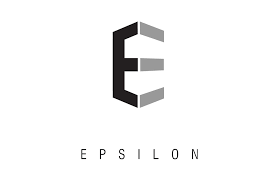
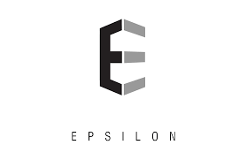

The sole purpose of placements is to get a Job and for that various resources are essential which are seqeuntially listed below.
• Resumé Preparation =>
Resume is the most important tool when applying for a job.
Here are some useful links which guide you in creating a successful resumé.
• Online / Written test =>
These are basically used to test the knowledge on a subject and these are variations of syllabi questions.
Probably the BEST links that one can find on the internet.
May also contain questions related to Quantitative Aptitude, Data Interpretation, Reasoning and Programming.
• Interviews =>
An interview is a conversation where questions are asked and answers are given.
More information about INTERVIEWS in the interview section, Please visit,Thank you ;)
• First round of screening / shortlisitng starts from resumé, so make sure your resumé is neatly formatted and get it verified by your seniors or teachers.
• Second round of screening / shortlisting is based on the aptitude or coding score.
GodSpeed!An Interview is formal, in-depth conversation conducted to evaluate the applicant’s acceptability.
It is face-to-face exchange of view, ideas and opinion between the candidates and interviewers.
Basically, interview is nothing but an oral examination of candidates. Interview can be adapted to unskilled, skilled, managerial and profession employees.
2 main types on Interviews are :
• Screening Interviews : The purpose of a screening interview is to ensure that prospective candidates meet the basic qualifications for a given position. It may take place in person or on the telephone. If you meet the basic qualifications, express interest in the position, and make a positive impression on the interviewer, you will likely be selected for a selection interview.
• Selection Interviews : Selection interviews are typically conducted onsite at the hiring company. The purpose of a selection interview is to determine whether a candidate will be selected for the position he or she is interviewing for.
Different types of screening interviews with useful links are : GroupDiscussion VideoSynthesis TechnicalInterviews
Different types of selection interviews with useful links are : FacetoFace StressInterview HR_Interview
• Different companies may have different screening and selection rounds.
Companies visited for 2017 batch :
 

About Us